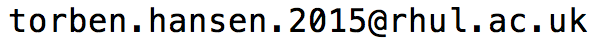

|
PhD student at the Centre for Doctoral Training in Cyber Security hosted at Royal Holloway, University of London, supervised by Kenny Paterson. I am interested in all aspects of
information security with a particular interest in applied cryptography.
Publications
My DBPL profile
A Surfeit of SSH Cipher Suites
Martin Albrecht, Jean Paul Degabriele, Torben Hansen and Kenny Paterson
CCS 2016. [Link]
Best Paper Award
Optimal Non-Perfect Uniform Secret Sharing Schemes
Oriol Farràs, Torben Hansen, Tarik Kaced and Carles Padró
CRYPTO 2014. [BibTex] Youtube]
On the Information Ratio of Non-Perfect Secret Sharing Schemes
Journal version of Optimal Non-Perfect Uniform Secret Sharing Schemes
Oriol Farràs, Torben Hansen, Tarik Kaced and Carles Padró
Algorithmica 79:987-1013 (2017). [ePrint]
Experience
Intern, Amazon
AWS Cryptography
January 2018 - June 2018
Intern, HP Inc.
June 2017 - December 2017
Student Programmer, Alexandra Institute
February 2014 - June 2015
Teaching Assistant, Aarhus University
Fall 2011 - Spring 2015
Various classes on topics:
Calculus, linear algebra, algorithms, data structures
Education
PhD Information Security
Royal Holloway, University of London, September 2015 - Currently
Specialising in Applied Cryptography
MSc. Mathematics
Aarhus University, August 2015
Erasmus replacement student
Rovira i Virgili Universitat, Spain, August 2013 - December 2013
Research assistant hosted by Oriol Farràs
Erasmus exchange student
Utrecht University, Holland, September 2012 - January 2013
BSc. Mathematics
Aarhus University, September 2012
Contact

Social Profiles
Linkedin
Twitter
GitHub
Misc
My Erdős number is 4 via Erdős - Pomerance - Damgård - Farràs - Me (To the best of my knowledge).
|